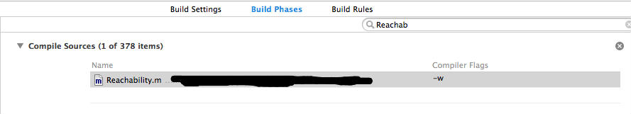
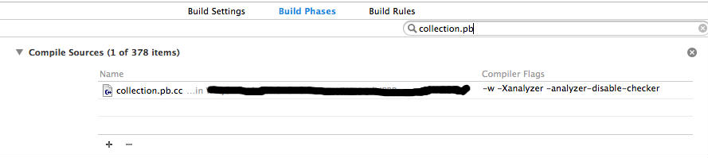
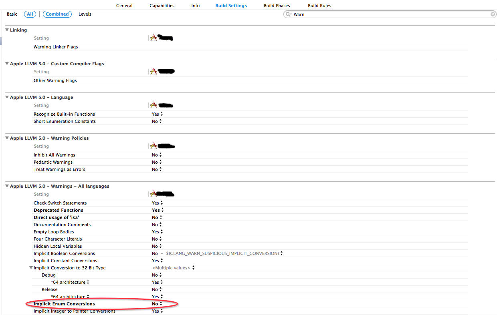

去掉xcode中警告的一些经验
1、编译时，编译警告忽略掉某些文件
只需在在文件的Compiler Flags 中加入 -w 参数，例如：

2、编译时，编译警告忽略掉某段代码
#pragma clang diagnostic push
#pragma clang diagnostic ignored "-Wmultichar"
char b = 'df'; // no warning.
#pragma clang diagnostic pop
参考网址：http://stackoverflow.com/questions/7897429/ignore-all-warnings-in-a-specific-file-using-llvm-clang/8087544#8087544
3、编译时，analyse警告忽略掉某些文件
只需在文件的Compiler Flags 中加入 -Xanalyzer -analyzer-disable-checker 参数，例如：

参考网址：http://stackoverflow.com/questions/7897429/ignore-all-warnings-in-a-specific-file-using-llvm-clang
4、编译时，analyse警告忽略掉某段代码
#ifndef __clang_analyzer__
// Code not to be analyzed
#endif
参考网址：http://stackoverflow.com/questions/5806101/is-it-possible-to-suppress-xcode-4-static-analyzer-warnings
5、项目使用arc以后，调用[someTarget performSelector:someAction]会报警告，有如下三种解决方法：
a、当ARC检查警告时，忽略掉该段代码
#pragma clang diagnostic push
#pragma clang diagnostic ignored "-Warc-performSelector-leaks"
[object performSelector:action];
#pragma clang diagnostic pop
对于多处出现该警告时，可以定义一个宏来替换，比如
#define NoWarningPerformSelector(target, action, object) \
_Pragma("clang diagnostic push") \
_Pragma("clang diagnostic ignored \"-Warc-performSelector-leaks\"") \
[target performSelector:action withObject:object]; \
_Pragma("clang diagnostic pop") \
b、使用objc_msgSend函数进行替换
#import <objc/message.h>
objc_msgSend(object, action);
c、在该代码文件的的Compiler Flags 中加入-Wno-arc-performSelector-leaks 参数
参考网址：http://stackoverflow.com/questions/7017281/performselector-may-cause-a-leak-because-its-selector-is-unknown/7073761#7073761
6、对于category覆盖类里面方法导致的警告，可能就要修改源代码了。因为苹果是不建议在category中覆盖类方法的，以为这种行为会产生未知的结果。
If the name of a method declared in a category is the same as a method in the original class, or a method in another category on the same class (or even a superclass), the behavior is undefined as to which method implementation is used at runtime.
参考网址：http://stackoverflow.com/questions/13388440/xcode-4-5-warns-about-method-name-conflicts-between-categories-for-parent-child
https://developer.apple.com/library/ios/documentation/Cocoa/Conceptual/ProgrammingWithObjectiveC/CustomizingExistingClasses/CustomizingExistingClasses.html （Avoid Category Method Name Clashes段落）
7、对于某个类中存在方法名和系统某个类的方法名相同的情形，如果你在此类的静态方法中使用self来调用该方法，可能引发警告，所以尽量避免此种情况。比如
我自定义一个类 RequestTask 继承自NSObject，里面有个静态方法：
+ (id)taskWithRequest:(BaseRequest *)request delegate:(id)delegate
{
return [[self alloc] initWithRequest:request delegate:delegate];
}
而在我的RequestTask确实有一个方法的定义为：
- (id)initWithRequest:(BaseRequest *)req delegate:(id)delegate;
理论上讲这个是没有任何问题的，但是编译器编译的时候却有一个警告，因为NSURLConnection有一个相同的方法，编译器认为我调用的是NSURLConnection类的该方法，参数类型不对报错。
所以此种情况，我们应该避免直接在静态方法中使用self调用类的实例方法。
8、当使用两个不匹配的enum类型或者enum类型默认也是会报警告的，此种情况可以通过直接强制类型转换解决，也可以在编译器中规避掉此种警告。例如：

9、当Enum类型和Enum类型中未定义的整形范围进行比较时，编译器也会给警告。此种解决方法目前查到的就是强制类型转化（如果有其他方式，请看到的ggjj告诉我一下，再此谢过了）。
本文最近访客